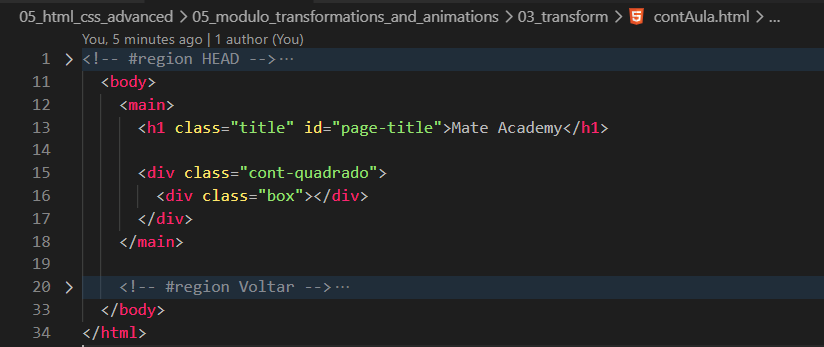
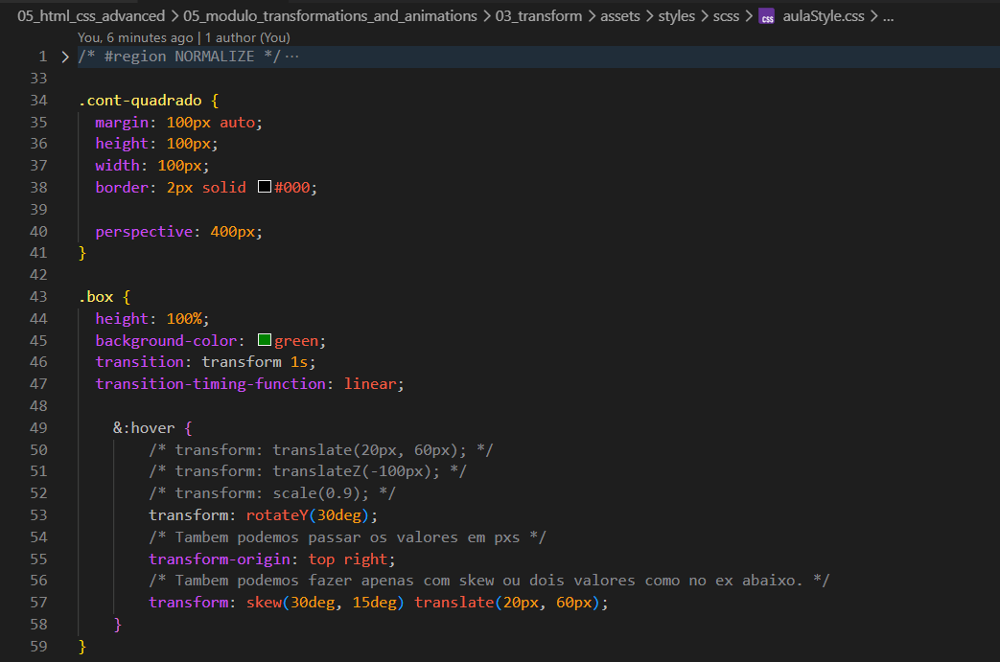

Transform
Intro
Agora iremos ver sobre traducao e deformacao de elementos, para isso usamos a propriedade transform.
Agora iremos ver sobre traducao e deformacao de elementos, para isso usamos a propriedade transform.
HTML:

CSS:

Com a propriedade translate conseguimos deslocar o elemento desejado, em nosso caso como adicionamos ao :hover havera um deslocamento ao passarmos o mouse sobre o elemento.
Podemos estar usando junto tambem com a propriedade transition: transform 300ms, dessa forma teremos um delocamento mais suave.
Alem disso se colocarmos mais de um valor em nosso translate() como: translate(20px, 60px) dessa forma ele tambem se movera para baixo, oque criara um efeito de deslocamento na diagonal.
Dessa forma conseguimos criar um efeito de ampliacao do elemento(zoom), mas para seu uso precisamos da propriedade perspective: 400px;(valor foi apenas por conta do exemplo). Com isso basicamente estamos dizendo que o container esta a 400px distante.
Podemos tambem fazer com valor negativo dessa forma parecera que o elemento se distanciou.
Resumindo: para que qualquer transform funcione em relacao ao eixo Z, o container deve conter uma perspective definida.
Com ele conseguimos aumentar e diminuir o elemento, com o valor de exemlo 2 o elemento sera dobrado. E se deixarmos por exemplo 0.8 ele ira diminuir em 20%.
Com ele conseguimos estar girando nosso elemento com o valor de 30deg ira rotacionar em 30 graus. Por padrao ele gira em torno de seu centro, porem isso pode ser alterado usando a propriedade transform: origin;
Com o X e Y, conseguimos definir o eixo da rotacao.
Com ele conseguimos controlar onde ira iniciar o deslocamento, por padrao temos center.
Com ele conseguimos estar controlando a suavidade de deslocamento de nosso elemento.
Conseguimos fazer deformacoes horizontais ou verticais, especificamos em deg
Conteudo da aula